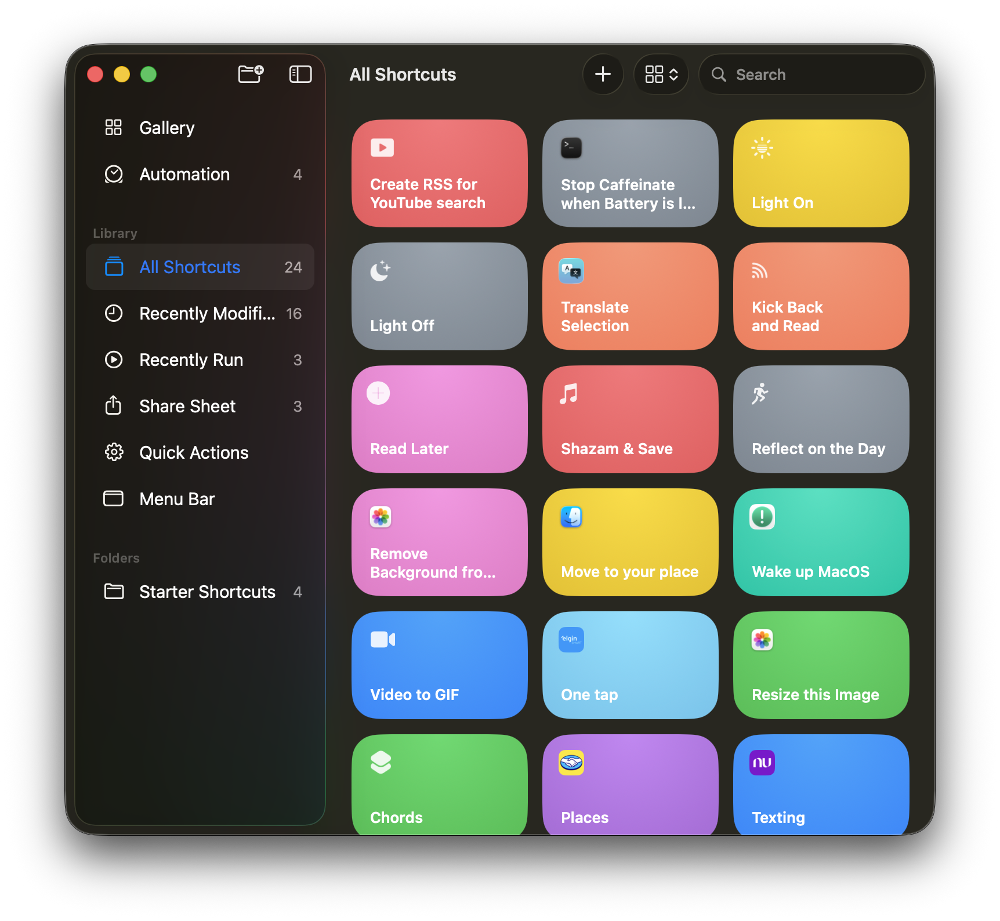
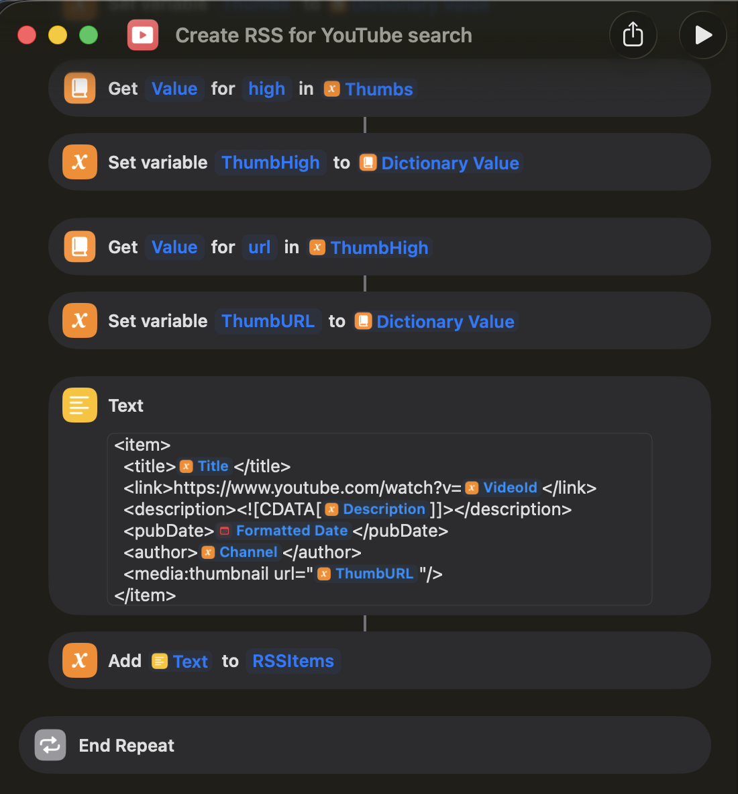

This is an automated RSS feed for your searches in YouTube.
This was created using Apple Shortcuts, an application for iOS and macOS that automate tasks.
Shortcuts is Apple’s block-based automation tool for creating custom workflows that run tasks automatically across apps and system features.
